W trakcie
Młodzi Uczniowie — Polska
Wojna odebrała dzieciństwo i radość wielu ukraińskim nastolatkom. Nasze niedzielne kluby w Rzeszowie to nauczanie Ewangelii, gry i wspólnota — miejsce, gdzie znów można być nastolatkiem.
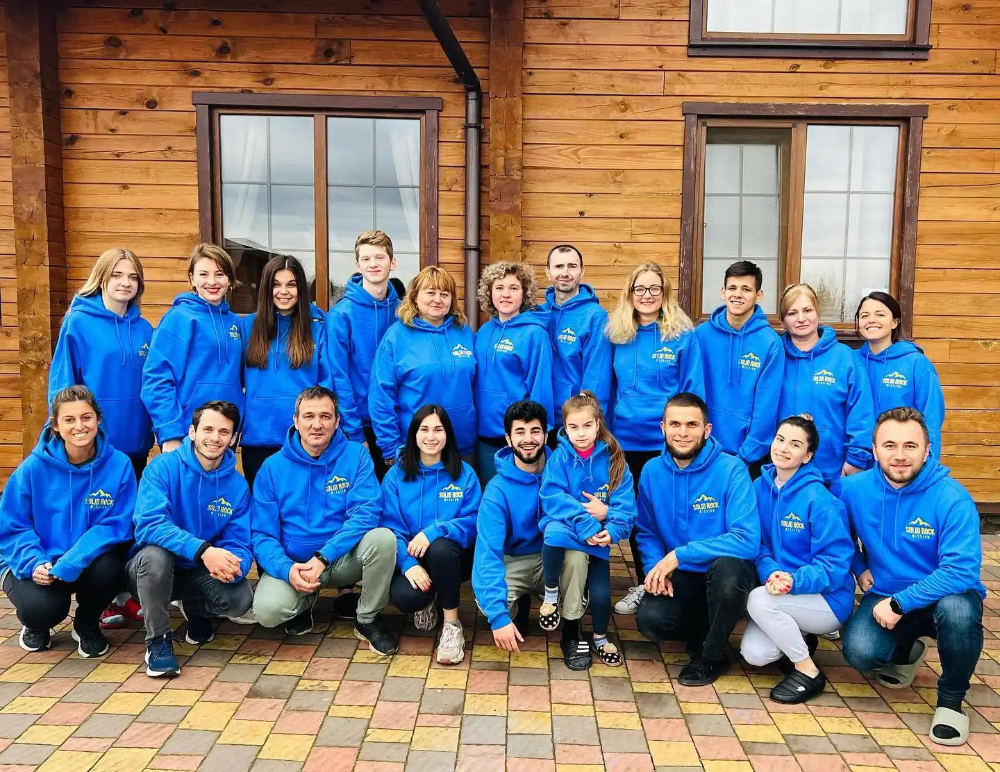
Młodzi Uczniowie · Polska
Docieramy do dzieci i młodzieży w Rzeszowie i w całej Polsce — także do tysięcy ukraińskich rodzin, którym wojna odebrała dom. Prowadzimy je od pierwszego obozu aż po dojrzałą służbę.
Organizacja non-profit 501(c)(3) · działamy nieprzerwanie od 2012 roku
Nasza misja
Jezus czynił uczniów i nas powołał, byśmy czynili uczniów. Docieramy do młodych ludzi, prowadzimy ich w uczniostwie i wyposażamy w darach oraz powołaniu dla Królestwa Bożego.
Kiedy 24 lutego 2022 roku wojna wypędziła setki tysięcy ukraińskich rodzin do Polski, nasza służba przeniosła się razem z nimi. Dziś Rzeszów jest naszą bazą — stąd prowadzimy niedzielne kluby, obozy i szkolenia dla nastolatków, którym wojna odebrała dzieciństwo.
Nie chodzi nam wyłącznie o radość, prezenty i dobrze spędzony czas na obozie. Chodzi nam o to, by zobaczyć każde z tych dzieci w niebie.
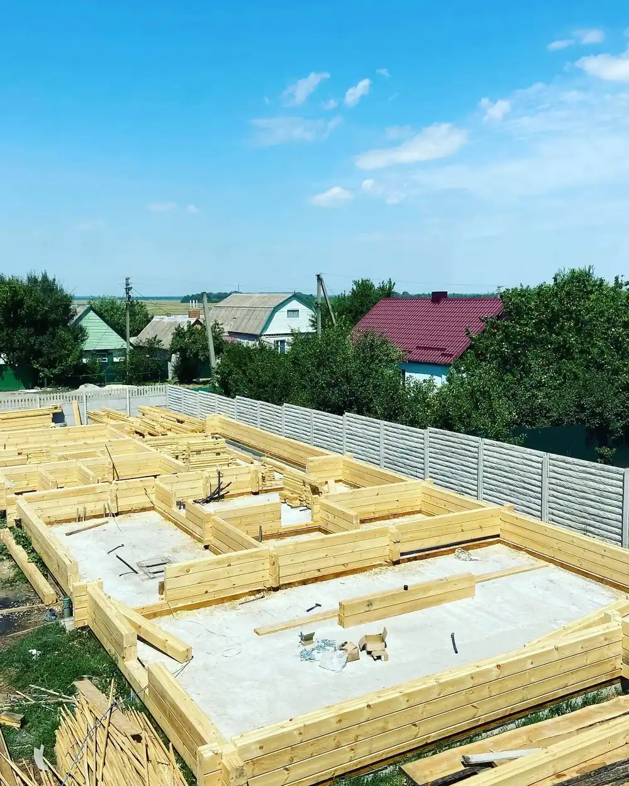
Duch Pana Boga jest nade mną, bo Pan mnie namaścił, abym zwiastował dobrą nowinę ubogim. Posłał mnie, abym opatrzył tych, których serca są złamane.Księga Izajasza 61,1
Droga ucznia
Nie organizujemy pojedynczych wydarzeń. Budujemy całoroczną drogę, którą dziecko przechodzi przez lata — aż samo stanie się liderem i misjonarzem.
Tygodniowe obozy dla dzieci w wieku 5–15 lat. Pierwsze spotkanie z Ewangelią, gry, sport i przyjaźnie na lata.
Cotygodniowe kluby przez cały rok — nauka umiejętności praktycznych, wspólnota i stała opieka duchowa.
Cztero- do sześciodniowe obozy przebudzeniowe, na których młodzi ludzie budują osobisty fundament wiary.
Dyscypliny duchowe: modlitwa, czytanie Słowa, post i codzienne chodzenie z Bogiem.
Przebaczenie i uzdrowienie wewnętrzne — kluczowy etap dla dzieci dotkniętych wojną i rozłąką.
Tożsamość w Chrystusie i przygotowanie do ewangelizacji — pierwszy raz, gdy uczeń sam dzieli się wiarą.
Sponsoring dziecka
Jedno miesięczne zobowiązanie zapewnia dziecku cały rok opieki: obóz letni, obóz przebudzeniowy, kwartalne szkolenia uczniostwa, ubrania, paczki żywnościowe, wyprawkę szkolną, prezent świąteczny oraz wyjazdy i wycieczki.
Sponsorujesz nie wydarzenie, lecz konkretne dziecko — i towarzyszysz mu przez lata.
Projekty
Trzy inicjatywy, w które możesz włączyć się już dziś.
Wojna odebrała dzieciństwo i radość wielu ukraińskim nastolatkom. Nasze niedzielne kluby w Rzeszowie to nauczanie Ewangelii, gry i wspólnota — miejsce, gdzie znów można być nastolatkiem.
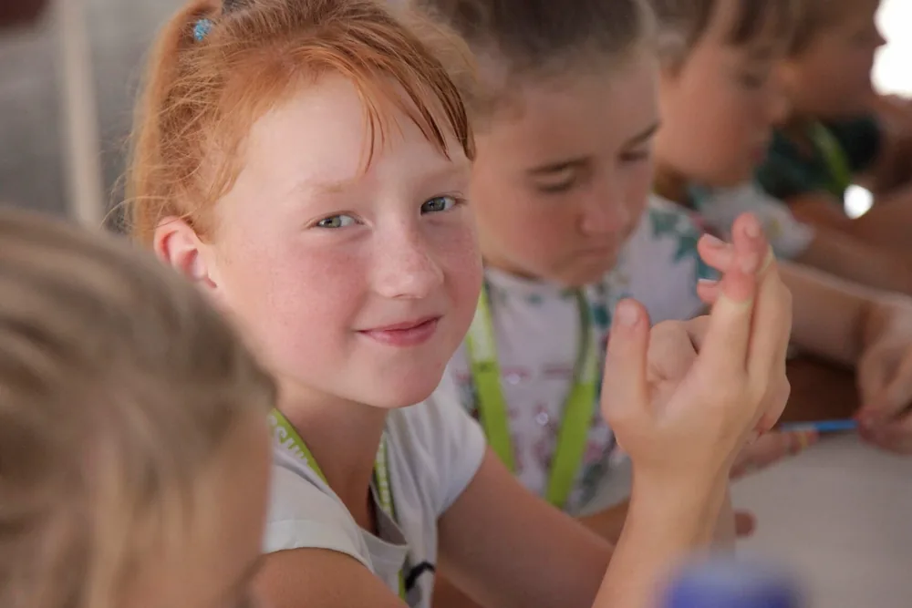
50 $ wystarczy, by wysłać jedno dziecko na obóz. Naszym celem jest dotarcie do ponad 3 000 dzieci i uchodźców wojennych — tych, którzy nigdy nie mieli takiej szansy.
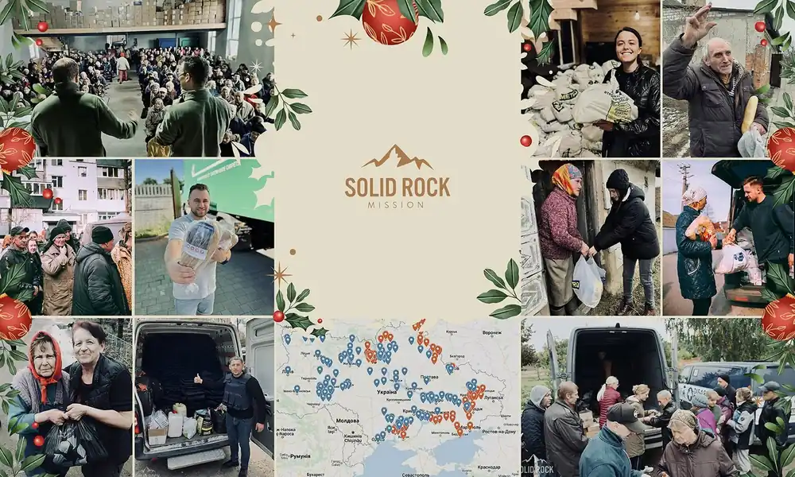
Żywność, leki i schronienie dla rodzin, dzieci, osób starszych oraz pastorów i misjonarzy — zarówno tym, którzy zostali, jak i tym, którzy uciekli do Polski.
Zespół w Polsce
Nasi misjonarze w Rzeszowie i okolicach służą na pełen etat, utrzymywani wyłącznie z darowizn partnerów. Możesz wesprzeć konkretną osobę.
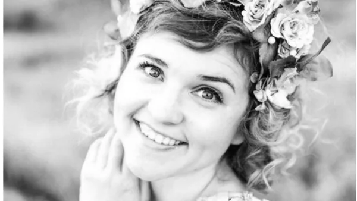
Dyrektor służby w Polsce
„Praca z młodymi ludźmi i uczniostwo nastolatków od 12. roku życia to najlepszy czas, by położyć fundament prawdziwej wiary.”
Pastor młodzieżowy
Polska
Poświęcił lata służbie ukraińskim dzieciom i nastolatkom uchodźczym. Dziś prowadzi młodzież i wychowuje własny zespół nastoletnich liderów.
Misjonarka
Rzeszów
Pierwszy wyjazd misyjny odbyła w wieku 12 lat, w 2017 roku. Po maturze powiedziała „tak” służbie na pełen etat: „To była najlepsza decyzja mojego życia.”
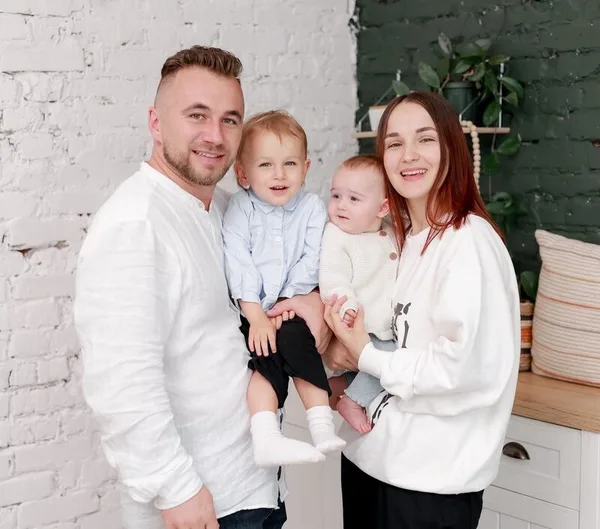
Misjonarka pełnoetatowa
Rzeszów
Urodzona w Ukrainie, poznała Jezusa w wieku 16 lat. Gdy w 2022 roku wybuchła wojna, zaczęła pomagać Solid Rock w Polsce.
Świadectwa
Obóz przebudzeniowy zmienił moje życie. Dowiedziałem się, kim naprawdę jest Bóg i czym jest przebaczenie. Oddałem życie Chrystusowi i przyjąłem chrzest wodny. Dziś sam służę na obozach dla dzieci i gram na perkusji w zespole uwielbienia.
Po obozie przebudzeniowym moje życie się zmieniło. Poznałam Boga, znalazłam nowych przyjaciół, a relacje w mojej rodzinie stały się o wiele lepsze. Mam nadzieję, że kolejne obozy będą jeszcze większe.
Współpracując z nami, nasza służba staje się twoją służbą — a my będziemy przedłużeniem twoich rąk i nóg w głoszeniu Ewangelii.
Z życia misji
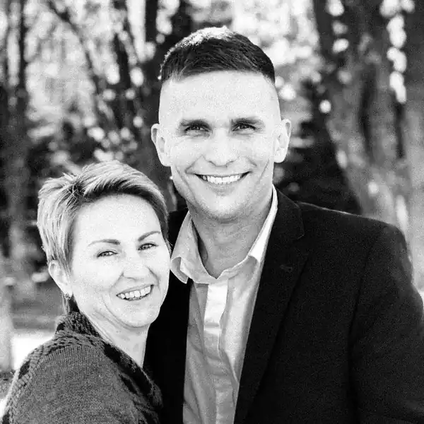
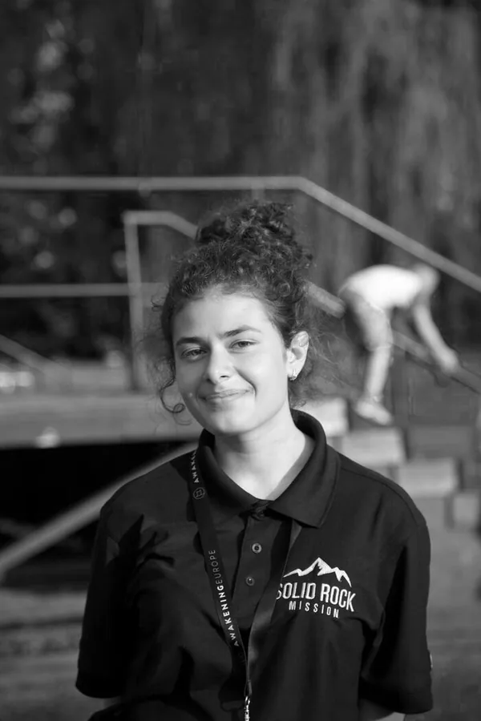
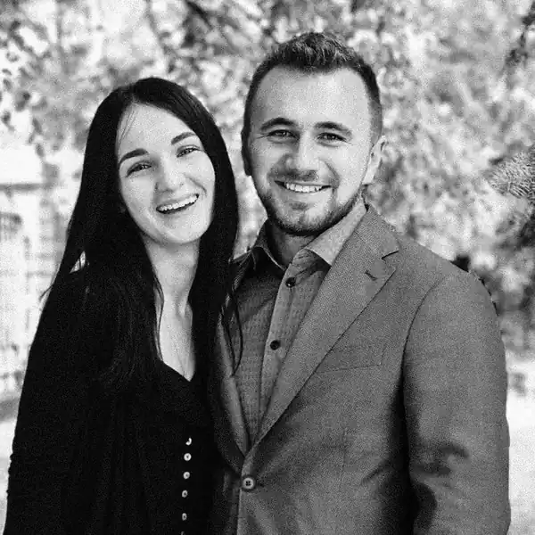
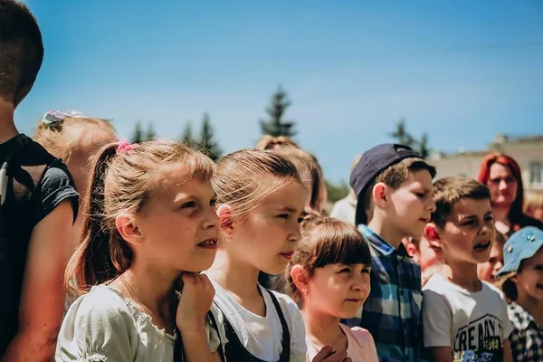
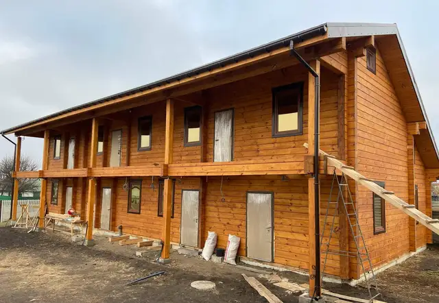
Możesz sponsorować dziecko, wspierać konkretnego misjonarza albo przyjechać i posłużyć razem z nami. Każda z tych dróg zmienia czyjeś życie.